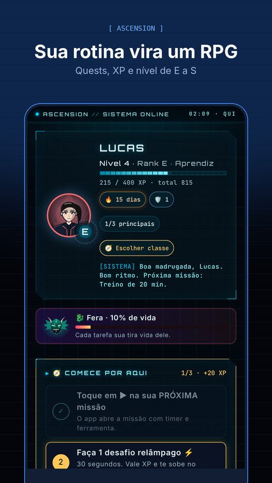
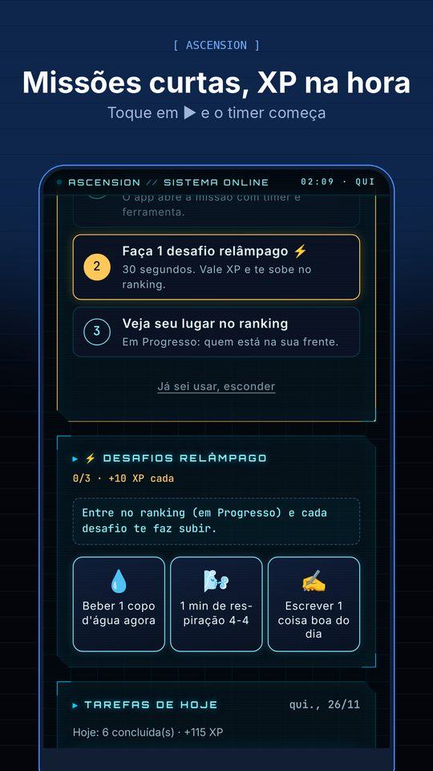
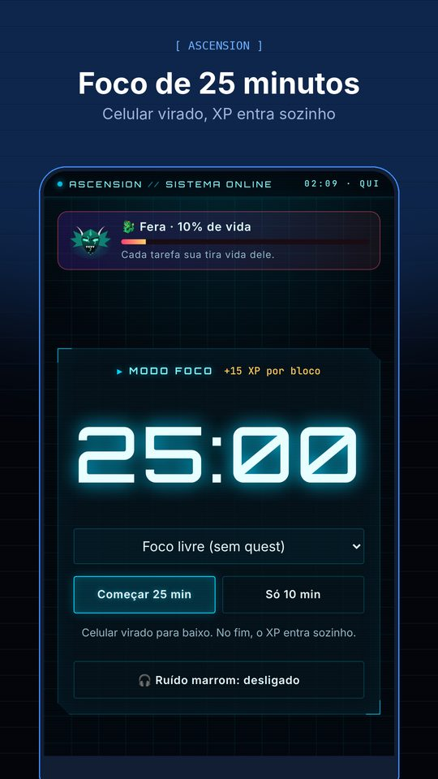
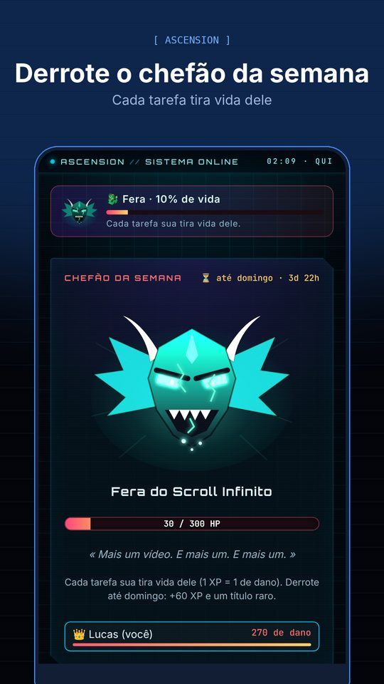
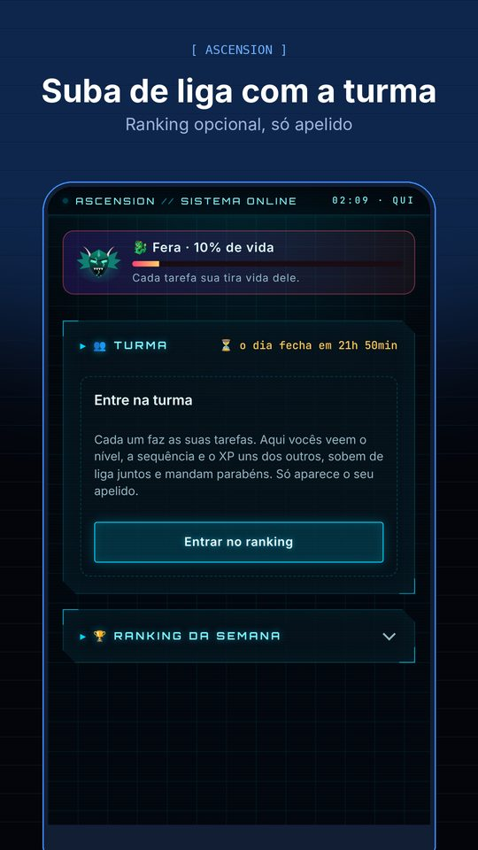

Ascension 1.0
Sua rotina vira um RPG. Cumpra missões da vida real, ganhe XP e suba do Rank E ao S.
Grátis · sem conta · funciona no iPhone e no Android · seus dados ficam no seu celular





O que tem na 1.0
Em breve
Perguntas rápidas
É grátis?
Sim. Sem anúncios e sem compras dentro do app.
Preciso criar conta?
Não. Você responde um perfil rápido e o jogo é montado na hora. Tudo fica no seu celular. Faça backup em Mais > Ajustes e backup.
Como instalo no iPhone?
Abra a página de instalação no Safari e siga os passos: Compartilhar, Adicionar à Tela de Início.
E no Android?
Abra a página de instalação no Chrome e toque em Instalar.
Funciona sem internet?
Sim. Depois de aberto uma vez, o app funciona offline. Ranking e Turma precisam de internet.
Menores de idade podem usar?
Sim. Até 13 anos, nada sai do aparelho e os recursos sociais ficam desligados. De 14 a 17 anos, o Mural da turma só com autorização do responsável. Veja a Política de Privacidade.